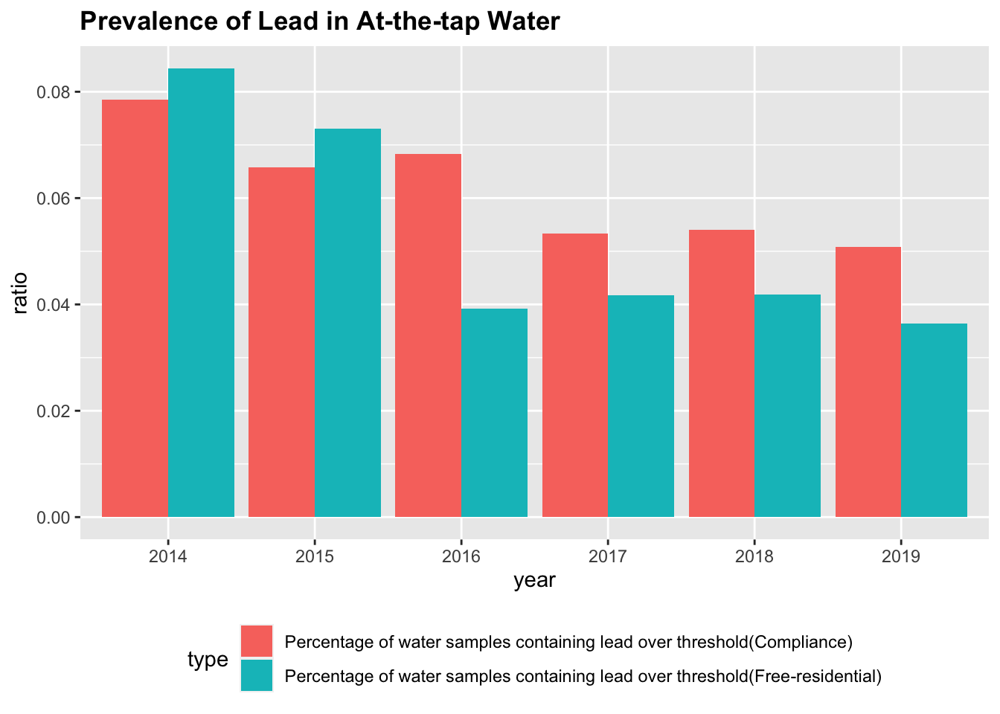
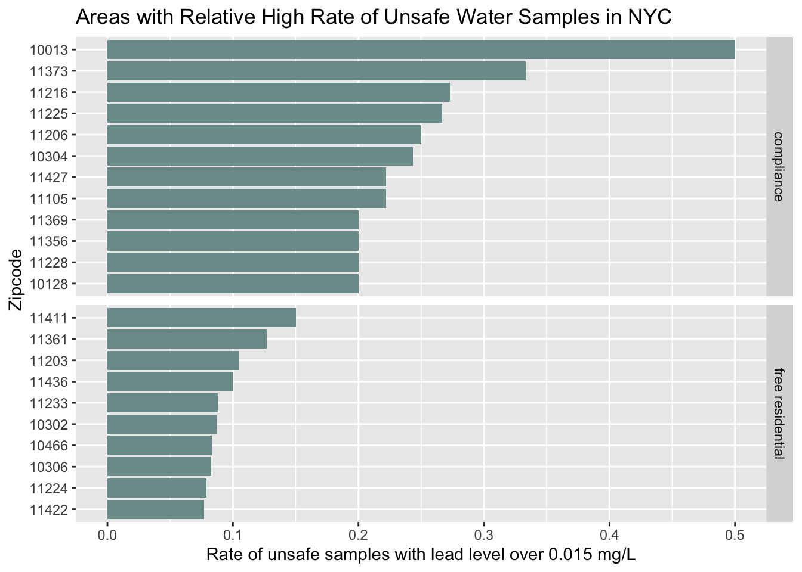
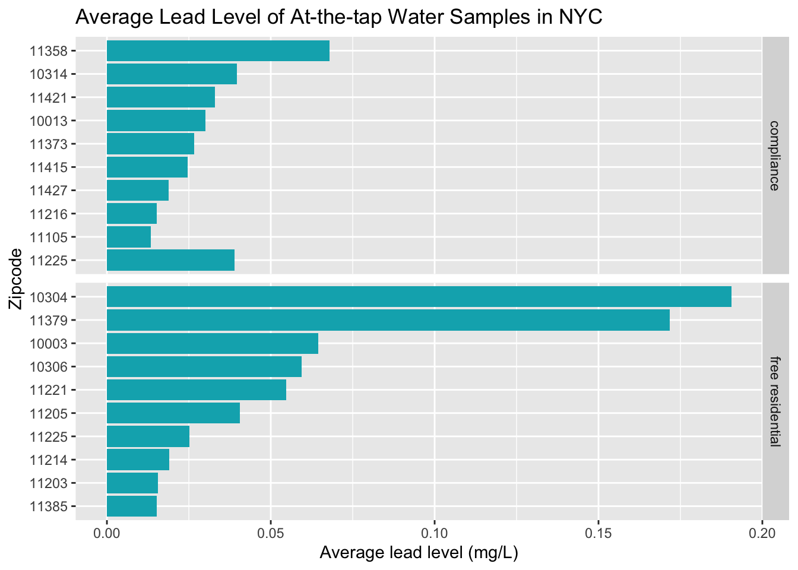
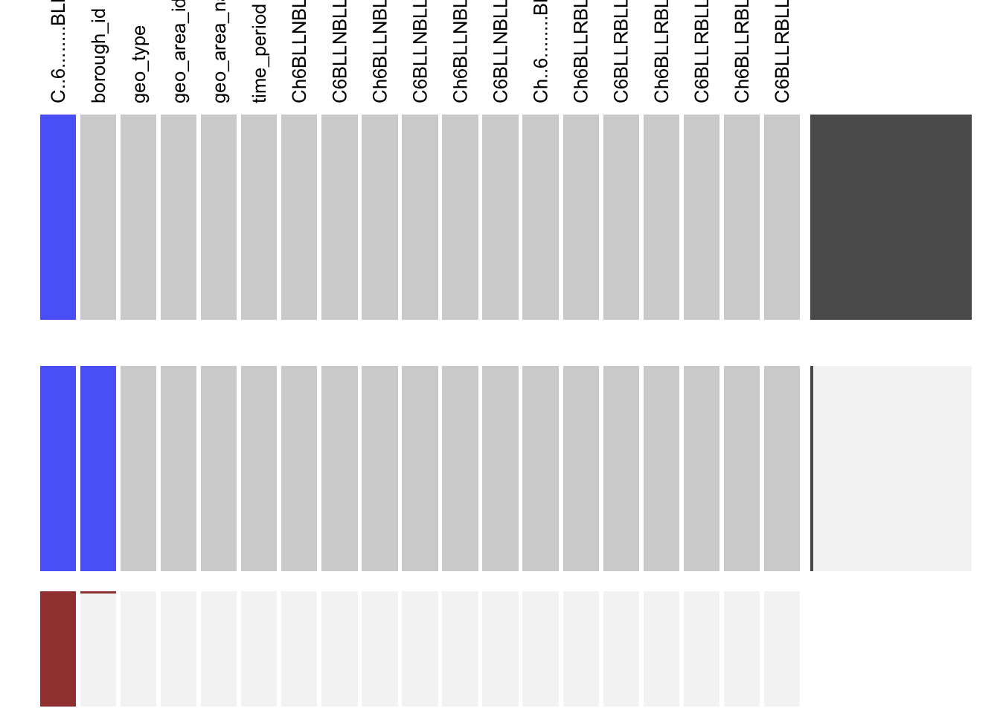

Chapter 5 Results
5.1 How prevalent is lead in NYC water system?

We studied two datasets for prevalence of lead in at-the-tap water. One is from water samples tested under compliance, marked as red, and the other is tested upon residents' request, marked as blue.
According to EPA(Environmental Protection Agency), the maximum allowable concentration of lead in drinking water is 15 µg/L. The grouped bar chart shows the percentage of water sample containing lead over the threshold(15 µg/L) every year from 2014 to 2019. From the chart, we can observe that percentage of water samples containing lead over15 µg/L from both compliance and residents decreased by year. The decrease of contaminated percentage is more remarkable in free-residential water samples, with almost half drop from year 2015 to year 2016. The reason might be that the government has been addressing the issue of lead-contaminated water more seriously and the technology improved the effect of drinking water purifying. However, by the end of year 2019, the percentage of water samples containing lead over the threshold from residents is still over 3.8% and that from compliance is even higher, over 5%. The issue of lead-contaminated water still presents and it poses a strong threat to citizens' health.
Since lead in water seems inevitable in New York, we are finding a way to reduce the lead concentration in our drinking water as much as possible. Minnesota Department of Health suggested that we should let the water run for some time before using water for drinking and cooking. They stated that it is an efficient way to reduce our exposure to lead in water because the more time water has been staying in pipes, the higher the lead concentration it.
We use the "Free Residential at-the-tap Lead and Copper Data" dataset to test this hypothesis. Each residential volunteer submitted two water samples: one is collected right after the tap is opened and the other is collected after the tap has flushed for 1-2 minutes. We use a ridgeline plot to compare the lead concentration between two types of water samples. The plot gives us two density curves with lead concentration of water samples on the x-axis and density on the y-axis, one for first draw samples and the other for 1-2 minute draw. We can observe that among 1-2 minutes draw samples,the percentage of water samples with lead concentration around 0 is higher than that of first draw samples. On the contrary, the percentage of water samples with large lead concentration is higher in 1-2 minutes draw samples. Therefore, we can conclude that lead concentration in water will decrease as the tap is opening and we can reduce our exposure to lead in drinking water by waiting for some time after opening the tap.
 To further investigate the prevalence of lead in tap water in NYC, we examined the difference of lead level in water samples over different areas across the city. Labeling the water samples with lead level over 0.015 mg/L as unsafe water, the above Bar Chart shows the proportion of unsafe water samples in areas represented by the unit of zip code. It summarizes the top 10 areas with high rate of unsafe water samples in NYC for both compliance and free residential datasets.

5.2 How are children in NYC affected by lead poisoning?

We subset our dataset to focus on the blood lead levels (BLL) of children living in New York City. The Centers for Disease Control and Prevention considers a blood lead level over 10 μg/dL abnormal but a level lower than 10 μg/dL might also be harmful. In the stacked bar chart above, we summarize in each year, the number of children with BBL >= 5 μg/dL per 1000 tested. We can observe that the number is decreasing every year. However, there are still many children harmed by lead every year. Therefore, we should attach great importance to the problem of lead contamination in water.

From this Cleveland plots, we can figure out from 2005 to 2016, for each region in New York, how many children under 6 years old in total are tested lead concentration in blood, marked as blue, and among those tested, how many children in total has blood lead level over 5 μg/dL per 1000 tested in , marked as red. The graph will tell us how many children are affected by lead and whether the number of high BLL children per 1000 tested is related to the sample size. The sample size in different regions may differ because population sizes are different and test capabilities are different. We want to figure out if the difference in sample sizes affects the difference in ratio of children with high BLL.
In the graph, regions are sorted by the number of children with high BLL per 1000 tested in an decreasing order. We can observe that as the red points are ordered, blue points are scattered so there is no obvious pattern of relationship between sample size and number of high BLL children. Some regions such as New York City and Queens have large sample sizes but they can still have a low number of high BLL children per 1000 tested. Therefore, the numbers of high BLL children per 1000 tested from different regions are not biased by the difference in sample sizes.
From the plot, we can see that the high BLL rates in different regions differ. Some regions such as Greenpoint and Borough Park has high BLL rates while some regions such as Upper East Side and Willowbrook has much lower BLL rates than other regions. The reason might be that in some places the water pipes and solders contain more lead and government should notice that and replace some of them to guarantee the health of residents.